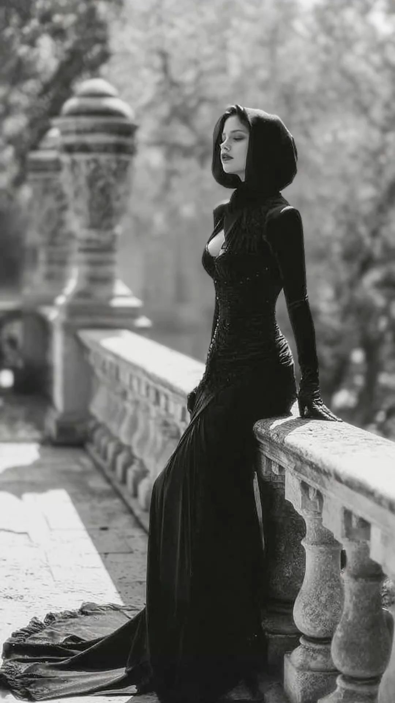

My shadow dance. I cannot stop thinking about your lips. The way your eyes shift from my face to my hips I cannot stop thinking about your eyes? The way your eyes always remain kind when they are plotting my demise. Deceit mirrored in your eyes was paired with smoke that came from your lies. I cannot stop thinking about a future that does not exist. Path concealed by mist Simply because you insist on keeping me on your list. I cannot stop thinking of your touch. Your touch would feel sublime like an unsolvable crime. I am Always Yours but you are never mine. My heart guilty for wanting your destruction And Always aching for unrequited affection. I cannot stop thinking of that night. When my intrusive thoughts became my desires. our shadows danced at the thought of being without the presence of light. We were Bathed in moonlight but hidden by the darkness.

touch me again and again